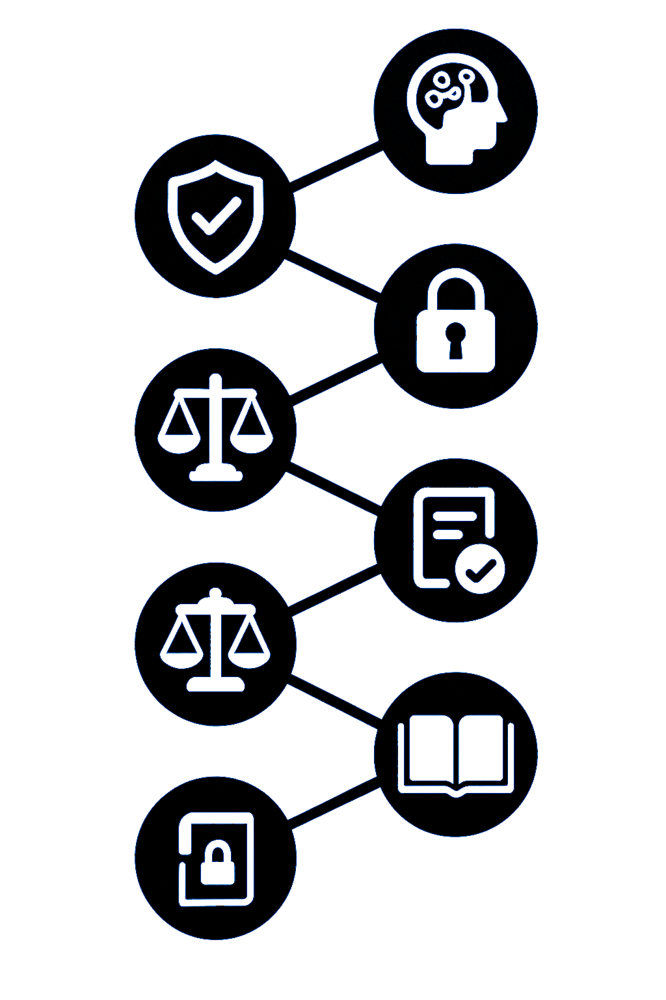

Lo + importante
- Supervisión humana: cualquier uso de IA debe ser supervisado por una persona que será responsable del contenido generado.
- Uso ético, transparente y responsable: todo contenido generado con (ayuda de) IA debe estar identificado: "Contenido generado con (ayuda de) IA". No se permite el uso de IA para manipular imágenes o declaraciones que alteren el sentido original del contenido informativo.
- Protección de datos y privacidad: las herramientas de personalización de contenidos, deben contar con el consentimiento explícito del usuario.
- Respeto derechos fundamentales: la IA debe respetar en todo momento la privacidad, la dignidad humana, la igualdad, libertad de expresión y derecho a la información veraz.
- Rendición de cuentas: el medio se hace responsable de todos los contenidos publicados (sean o no generados por IA).
- Proporcionalidad: el uso de IA en medios debe justificarse por su valor añadido, eficiencia y mejora en los flujos de trabajo.
- Seguridad: toda herramienta debe ser evaluada y revisada por los responsables del medio antes de su uso.
- Alfabetización: los profesionales deben recibir formación específica sobre el funcionamiento, alcance y límites de cada herramienta.
¿Dónde utilizar IA?
- Producción de contenidos: borradores de textos, titulares, resúmenes, subtítulos, descripciones, gráficos, mapas, infografías, etiquetado de contenidos,traducción automática, doblaje, generación de voz sintética.
- Edición y verificación: edición de vídeo, audio e imagen. Verificación de hechos (fact checking)
- Generación de contenidos automáticos: automatización de datos deportivos y meteorológicos.
- Distribución y redes sociales: sistemas de recomendación, personalización, análisis predictivo, selección de miniaturas, moderación de comentarios y gestión de comunidades.
- Gestión documental: análisis de contenido, extracción de datos.
- Formación y comunicación interna: gestión de flujos de trabajo, asignación de tareas, diseño de parrillas y escaletas.
- IMPORTANTE: no se recomienda el uso de imágnes y vídeos sintéticos en contenidos informativos (salvo excepciones siempre que se especifique su uso) ni en portadas.
Recomendaciones clave
- Establecer políticas editoriales claras (especificando claramente los usos prohibidos y protocolos internos).
- Evaluación de riesgos antes de usar IA.
- Seguimiento y revisión periódica de herramientas.
- Formación continua de equipos (con grupos de trabajo y equipos de referencia).
- Diseño participativo de herramientas (evaluación de resultados, consultas).
- Supervisión editorial de resultados (rendición de cuentas).
- Declaración del uso de IA en contenidos.
Consideraciones especiales a tener en cuenta
- IMGENES Y VDEOS: etiquetado obligatorio, evitar simulaciones engañosas que puedan inducir a error, y siempre seguir los criterios de uso editoria.
- TRADUCCIN, SUBTITULADO Y DOBLAJE: revisión profecional obligatoria, evitar distorsiones o errores de interpretación (evitar contenidos sensibles), etiquetado claro.
- ASISTENTES DE ESCRITURA: supervisión editorial, prohibición de publicación sin revisión, evitar la suplantación de autoría.
- REDES SOCIALES: control humano y verificación antes de publicación, regulación en uso de chatbots y asistentes.
- EVENTOS EN TIEMPO REAL: validación humana imprescindible. identificación de contenidos, evitar sobrecarga informativa o automatización sin filtro.

Aspectos legales a considerar
- MARCO LEGAL APLICABLE
- Reglamento Europeo de Inteligencia Artificial (AI Act, 2024)
- Reglamento General de Protección de Datos (RGPD) y Ley Orgánica de Protección de Datos y Garantía de los Derechos Digitales (LOPDGDD)
- Ley de Propiedad Intelectual (España)
- Carta de Derechos Digitales (2021)
- Código Deontológico de la FAPE
- Normativa sectorial audiovisual y recomendaciones internacionales (UNESCO)
- PRINCIPIOS CLAVE:
- PROPIEDAD INTELECTUAL: Sólo las personas físicas pueden ser consideradas autoras de una obra intelectual (Art5. Ley Propiedad Intelectual). La utilización de modelos entrenados con materiales protegidos por derechos de autor debe cumplir la legislación sobre propiedad intelectual incluyendo derecho de cita, autoría y licencias de uso.
- TRANSPARENCIA Y CONSENTIMIENTO: declaración del uso de IA y obligatoriedad de contar con el consentimiento informado.
- PROTECCIN DE DATOS: Respeto a Ley de Protección de Datos (consentimiento, derecho de acceso, rectificación y supresión de datos).
- REDUCIR RIESGOS DE SESGO, PLAGIO, ALUCINACIONES: evaluar los sistemas antes de su integración, protocolos de supervisión, incorporar sistemas de trazabilidad, revisar posibles plagios.